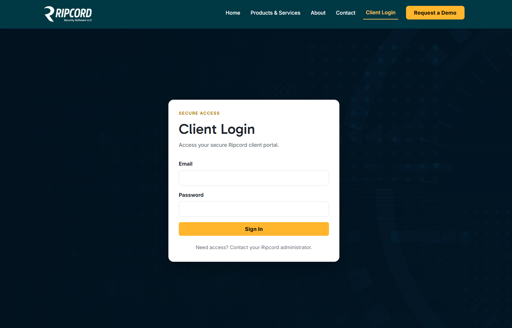
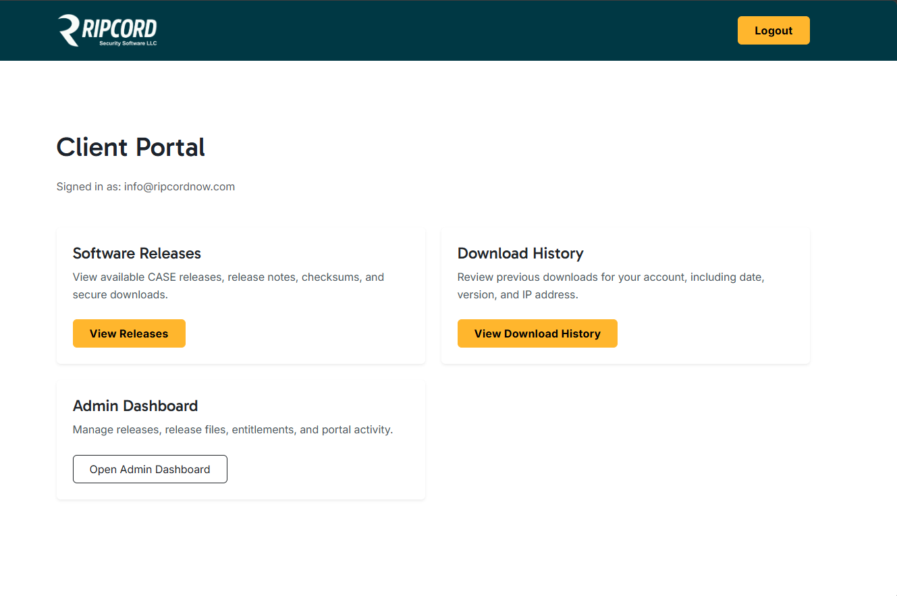
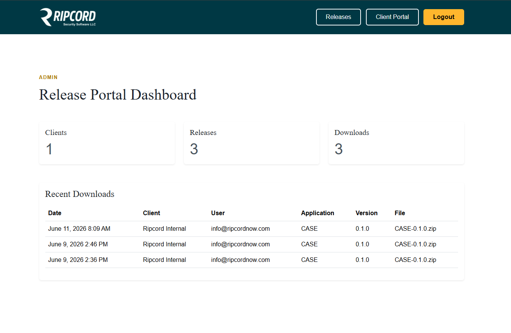

Problem
Business problem
The organization needed the foundation for a client-facing portal where users could log in, access account-specific information, and interact with application functionality through a structured interface. The project was in an early stage, but the goal was to establish the core experience, authentication flow, and administrative foundation.

Role
My contribution
I built the early client portal experience, including login-related screens, account access concepts, user interface structure, and administrative views. Although the company could not continue development, the work established the beginning of a more complete authenticated client system.
Portal Foundation
Client-facing experience
The portal interface was designed to give clients a simple starting point for accessing software functionality. The design focused on clarity, account access, and a clean user experience that could grow as additional features were added.

Administration
Administrative structure
I also worked on early administrative views that supported the portal concept. These screens helped establish how user information and client-facing data could be organized, reviewed, and managed inside the system. The point of the "admin" user was that an organizations established supervisor could oversee who downloaded any update, and when. This gave the organizations admin control.

Execution
Key contributions
- Built early client portal screens and user interface structure.
- Contributed to login and authentication-related workflows.
- Created a foundation for account-based client access.
- Designed early administrative views for managing portal information.
- Improved user flow clarity for client-facing access.
- Balanced usability concerns with security-minded development decisions.
Security
Security-minded development
Because the portal involved user access and authenticated workflows, I approached the work with security in mind. I focused on how users would enter the system, how access should be structured, and how the interface could support clear, predictable application behavior.
Result
Outcome
The project established the starting point for a client portal and authentication system. While development did not continue to a full production release, the work created a usable foundation for client access, administrative structure, and future authenticated workflows.